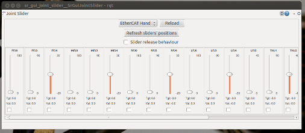

Welcome to The Hand Demo
To get started click the Start Hand  icon.
icon.
This will start the simulator and open a visualization window with a 3D
model of the hand:

You can use the mouse to move around the 3D world, see the bottom of the
window for tips.
Next, lets move the hand, click the Hand Sliders  icon.
icon.

Try moving the FFJ0 slider and the first finger
will curl over. If we had areal shadow hand attached that would be moving
too.
TODO: Trouble shooting section?
For next steps move over to the Shadow
Robot Wiki Pages on Ros.org.